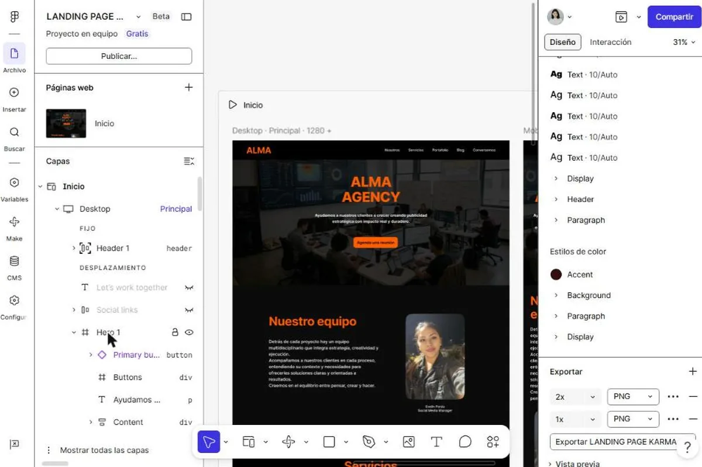

Alma Agency
Landing page para una agencia de publicidad, diseñada y maquetada en Figma.
- Figma
- Auto layout
- Componentes
- Decisión
- Organicé la página en ocho secciones: header, hero, equipo, servicios, proyectos, insights, contacto y footer. Usé auto layout y componentes reutilizables para mantener el espaciado consistente, con una paleta de negro y naranja sobre fondos oscuros.